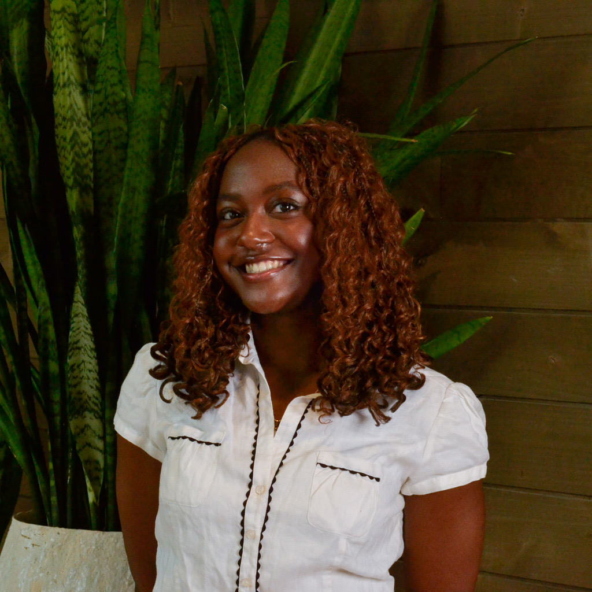

<div class="textcontainer">
<h3>About Me</h3>
<p class="margin"> </p>
<div class="center-row">

<p id="aboutme">
Hello everyone! I am a senior in Cabot House double concentrating in CS & Neuroscience. I am really interested in
the intersection between technology and neurobiology especially from a healthcare perspective. On campus,
I'm involved in the Association of Black Harvard Women, Nigerian Students Association, and
as an Experimentor in PBHA. Outside of school, I really enjoy reading, working out, and cats! I hope to own some of my
own in the future, but until then my goal is to make every assignment in this class cat-themed. :)
</p>
</div>
<br></br>
</div>